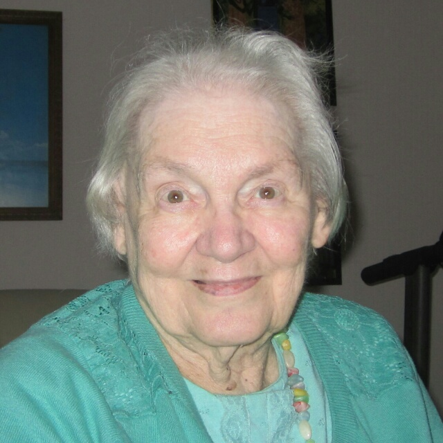
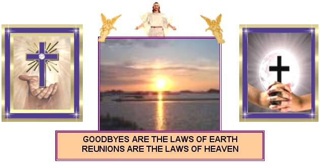
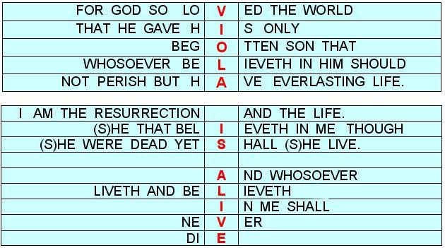
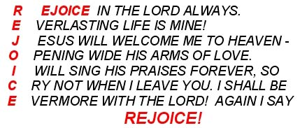
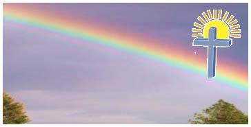
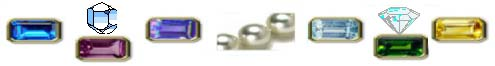
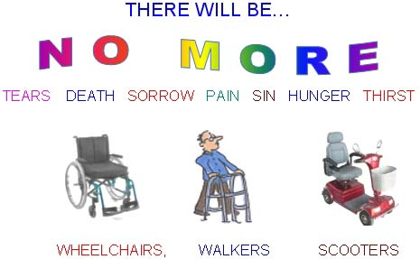
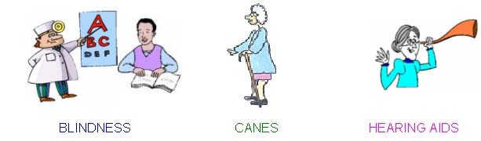
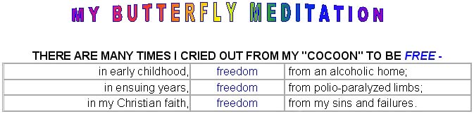

Farewell

When you receive this information, I will no longer be with you. God in His mercy reached into my life in 1939, wrote my name in the Lamb's Book of Life, guided me through many years of challenges and good times, and now, my life has ended. He has taken me home to be with Him. Very special will be seeing Jesus first of all, and then my dear husband Fred who preceded me in 2005. Do not grieve - I am in a much better place. There are "happy" tears - and if your tears fall - they will be "happy" tears when you think of me, for you, too, will rejoice in the grace of God in my life. I have gone from the arms of love of my dear family straight to the arms of love of my Lord and Saviour. I praise God for His manifold blessings. I praise God for my family who have loved me to the end. I praise God for many wonderful friends and relatives. Thank you - thank you - my life has been enriched beyond measure. God bless you as you read these words, and may you glorify the Lord for His extraordinary love to a very ordinary person.
God granted me blessings few can claim,
The riches of friends and family - too many to name.
Wherever life sent me, wherever I made my home,
You were there for me - I never felt alone.
You cared and shared, and upheld me in prayer,
Life's burdens were eased, because you were there.
For the blessings you brought - thank you, family and friends,
We had a wonderful friendship that never ends.
For we'll meet again with the Lord in that city so grand,
And together we will reunite, joining each other hand in hand.
(by Viola Pahl)



SHORT BIO OF VIOLA PAHL
Viola Alice Pahl was born September 13, 1925, Winnipeg, Manitoba. At three months of age, she was brought to Vancouver and was raised by her mother and a common-law father. She had no brothers or sisters, and the only remaining members on her side of the family are: an aunt by marriage and four cousins and their families.
Her childhood home life was fraught with much sadness due to her mother and common-law father having marital and alcoholic problems. However, at age 14, under the ministry of Pastor Mark Buch, formerly of The People's Fellowship Tabernacle in Vancouver, Viola made a commitment to Jesus Christ, followed by believer's baptism shortly thereafter.
At age 15, Viola's mother was in a drowning mishap, and Viola went to live with her maternal grandparents. Almost a year after her mother's death, Viola's grandfather passed away, leaving Viola and her grandmother to manage for themselves.
At age 20, Viola and Fred Pahl were united in holy matrimony on May 4, 1946. Their marriage was blessed with two children: a son, Gerhart, and a chosen daughter, Susan Joy. In 1948, Viola was stricken with polio which left her physically handicapped, and for the rest of her life she used crutches and a wheelchair for mobility
From 1948 until 1981, Viola accompanied her pastor husband to the following churches:
Hilda Baptist Church, Hilda, Alberta
East Olds Baptist Church, Olds, Alberta
Rabbit Hill Baptist Church, South Edmonton, Alberta
Lauderdale Baptist Church (now disbanded), Edmonton, Alberta
Springside Baptist Church, Springside, Saskatchewan
Northgate Baptist Church, Edmonton, Alberta
Wiesenthal Baptist Church, Millet, Alberta
McKernan Baptist Church, Edmonton, Alberta (Interim)
First Baptist Church, Nanaimo, BC (Interim)
First Baptist Church, Port Alberni, BC (Interim)
From 1981 to 1985 Viola enjoyed being with the seniors at Evergreen Baptist Home, White Rock, when her husband was the Chaplain.
In the business world, Viola was employed as a secretary in many interesting capacities: one in particular was typing correspondence for a former Premier of Alberta - Peter Lougheed. She taught Business Administration courses at Malaspina College in Nanaimo and served as a volunteer helper at a Nanaimo Christian school where she taught English and Drama Classes. In her last few years, Viola often helped with teaching English Second Language classes.
She will be remembered for the books she wrote about her experiences
THROUGH THE IRON LUNG and
GOLD IN LIFE'S HOURGLASS. Her "Granny" series books have been enjoyed by many and a few are still available (see Viola's website
www.pahl.ca/fredandviola.html). Also, numerous plays and skits from the pen of Viola were presented at churches throughout North America. Her love of the Hawaiian steel guitar enabled her to enjoy playing this beautiful instrument for many years.
Viola would like to be remembered for her sense of humour, her happy outlook on life, and her devotion to the Lord in spite of the many difficulties that came her way because of physical disability. Only a great God could do so many exciting and wonderful things for such a weak and unworthy person! May the marvelous grace of God demonstrated in this frail vessel serve to encourage friends and family that God is able to do exceedingly abundantly above all that one can ask or think. May all the glory be to God!
A TRIBUTE TO MY HUSBAND & FAMILY
"Husbands love your wives" says the Scriptures. "Love your wife as you do your own self; protect and cherish her as Christ does the church." When Fred vowed before the Lord on his wedding day to love, honour, and cherish his wife, in sickness and in health, until death parted them, he made a life-long commitment and never wavered in his love and loyalty to me. Even though many of his plans and goals for life were also shattered by the devastating handicap which befell me only a short two years after our marriage, he never murmured nor complained about this seeming tragedy. I know that without the care and help and encouragement that my husband gave, my life would have been very difficult indeed.
Fred was not only a husband to a handicapped wife, but honestly earned the endearing nickname "Father Hen." He helped to raise two children; helped with the housework; and helped with chores that normally would be performed by the mother of the home.
He never said a derogatory word to me about my handicap, nor did he ever make me feel any less whole because of my disability. Fred encouraged, humoured, cheered, uplifted, and inspired me with his optimistic and happy outlook on life. He performed household tasks in the role of a servant; he did these duties without a word of grouchiness or in a mood of irritability. As a husband and care-giver to a handicapped wife - Fred stands head and shoulders above many men and is worthy of commendation for his undying commitment to God first, and then to the wife with whom he shared life for 58 years.
My son Gerhart, his wife Penny and their four sons: Christopher, Wesley, Lionel, and Neil as well as my daughter Susan deserve my gratitude for all the kind, thoughtful, and gentle deeds they demonstrated throughout the years. Thank you for honouring me as your mother - and Chris, Wesley, Lionel, and Neil respected me as their grandmother. They often helped "Grandma" with some of the heavy housework duties - cheerfully and willingly.
I leave this tribute as a note of praise and thanksgiving for the blessings that my family brought to my life. God was good to have blessed me with such a loving and caring family! I left this world from their arms of love to God's arms of love. Could it be any better than that?
A family is the cornerstone Of all that man holds good.
A family is a symbol Of universal brotherhood.
A family home is a classroom, You live and grow together,
You learn the art of loyalty - It's a port in stormy weather.
A family is where love abides, Where ties are strong and true,
Where joys are shared throughout the years As you go smiling through.
A family is a sacred gift, A gift of God's pure grace,
Abiding in His presence, You feel His warm embrace.

THANK YOU, MY DEAR FAMILY, FOR YOUR LOVE TO ME
For many years Viola was blessed with a "soul-mate". Helene Kelly was at one time a New Yorker; she moved to White Rock, and then in later years, to California. Helene was a prolific writer of poetry, and she submitted the following poem about Viola to be read following Viola's death.
AS I KNEW HER
Our loss is keenly felt by all Who will continue on
Consoled somewhat by memories Of a dear friend too soon gone.
She'll dwell in paradise; a place Where worry isn't known
And infirmaries are not needed In that Elysian zone.
I remember her attention To all that friends would say;
She was interested enthusiastic Whatever the time of day.
She listened with her heart and mind, And her answer was like a prayer;
She responded to everyone the same - With understanding, friendly care.
She was a gifted musician
Shared her talents when she could
Assisting in church functions As staunch able members would.
Her face was naturally radiant, Even when no smile was there,
Her happy thoughts exuded From all her features fair.
Her beauty stemmed from deep within; Her gratitude was real
To God for all His blessings - She was a model of Christian zeal.
Her love, like fragrance of flowers, Lent an aura at its peak,
When she played hymnal music, And whenever she would speak.
Her appreciation of art embraced The masters of world-wide fame,
And generously she'd compliment Unrenowned artists the same.
She was a gracious lady, hospitable, too,
And when she gracefully said "grace" - God's blessings were felt from the blue.
She left a precious legacy; The memory of Viola Pahl
And that's why her fellowship will be A comfort to recall.
Remember, she'll be with us. When needed, she'll be there
In spirit, when our thoughts turn to The bonds we used to share.
WE'LL NEVER SAY "GOOD-BYE"
(From an old hymn written by Mrs. E.W. Chapman and J.H. Tenney)
Our friends on earth we meet with pleasure, While swift the moments fly,
Yet ever comes the thought of sadness, That we must say "good-bye."
How joyful is the thought that lingers, When lov'd ones cross death's sea,
That when our labours here are ended, With them we'll ever be.
No parting words shall e'er be spoken, In that bright land of flow'rs,
But songs of joy and peace and gladness, Shall ever more be ours.
We'll never say "good-bye" in heav'n;
We'll never say "good-bye,"
For in that land of joy and song,
We'll never say "good-bye."
(Written by Viola Pahl)
Though life's earthly story must come to an end,
Much more awaits us in glory, dear friend.
When the troubles and struggles of life are o'er,
We'll greet each other on the golden shore.
We'll pass through pearly gates and see our great King,
The portals of heaven will ring as we sing,
"Crown Him-crown Him Lord of all for evermore."
Angels join the chorus as our Lord we adore.
Heaven's resplendent with gems gleaming bright,
Beryl, Pearl, Topaz, Sapphire, and Chrysolite,
In that city where we'll never grow old,
The streets are paved with priceless, precious gold.

Though some of life's "pages" were stained with tears,
Our Lord was with us to calm all our fears.
Many pages were filled with times of gladness
Far surpassing the times of gloom and sadness.
One day, dear friend, we'll continue the story
Of abundant life in heaven's glory.
Our Lord's hand we'll clasp, and celebrate with praise,
Our exalted King through eternal days.
The following two poems are favorites of Viola. They deal with her handicapped status.
They were not written by Viola, but they convey some of her thoughts.
Along the Golden Streets, Viola walks tonight,
With wonder in her heart, faith blossomed into sight.
She walks and stops and stares, and walks and stops again,
Vistas of loveliness, beyond the dreams of men.
Once bound with crutches, wheelchair, and shackled to her bed,
She can now climb eternal hills with light and easy tread.
She has escaped at last, the cruel clutch of pain;
Her lips shall never taste its bitter cup again.
Oh! Never call her dead, this buoyant one and free,
Whose daily portion is delight and ecstasy!
She bows in speechless joy, before the feet of Him,
Whom, seeing not, she loved, while yet her sight was dim.
Along the Golden Streets, Viola walks today,
Released at last from bondage, she's with the Lord to stay!
WE CAN STILL PRAY
(Author unknown)
How handicapped, how bound are we When Christ was bound on Calvary?
He could not move a hand nor foot, And He was wracked with anguish, but
He gave Himself to earnest prayer For those whose weight of sins He bare.
"Father, forgive, they know not what they do." O child of God, say not,
"I am too handicapped, too bound, Too busy, and I have not found
A service I can do for Him." O Shame! Let us, with eyes grown dim,
Look back to Calvary. Bound helpless there,
The suffering Saviour gave himself to prayer!
WHEN WE GET TO HEAVEN, WE WILL NOT NEED
WHEELCHAIRS, CANES, CRUTCHES, ETC.
SO WE WILL LEAVE THEM AT HEAVEN'S GATE, AND BE FREE FOREVERMORE.



Symbolically, I am earth-bound - like a caterpillar - in a world
which keeps me captive in a dark, restricting cocoon.
I know little about the world to which I am going,
but one day, I will burst out of my cocoon and be transformed into a new creation.
Like a butterfly, I will soar into the heavens -
CALL IT WHAT YOU MAY - TRANSFORMATION, METAMORPHOSIS, GLORIFICATION -
IT MEANS THAT I WILL BE WITH THE LORD FOREVER!
SURELY GOODNESS AND MERCY SHALL FOLLOW ME ALL THE DAYS OF MY LIFE:
AND I WILL DWELL IN THE HOUSE OF THE LORD FOREVER.
MY HELPFUL MOTTOS HAVE BEEN:
I may be helpless, but I am never HOPELESS!
With HOPE, I can COPE - not MOPE!
Romans 15:13:
"abound in HOPE through the power of the Holy Ghost."
With aging and physical disabilities I have had to GIVE IN, (i.e. rest more)
but with the Lord, I never GIVE UP!
"Godliness with CONTENTMENT is great gain" (1 Timothy 6:6)
"I have learned the secret of CONTENTMENT in every situation.
I CAN DO ALL THINGS THROUGH CHRIST WHICH STRENGTHENETH ME."
(Philippians 4:11-13)